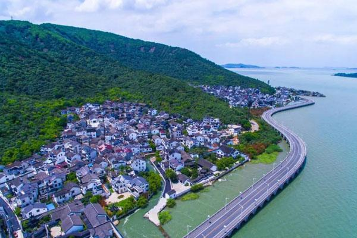
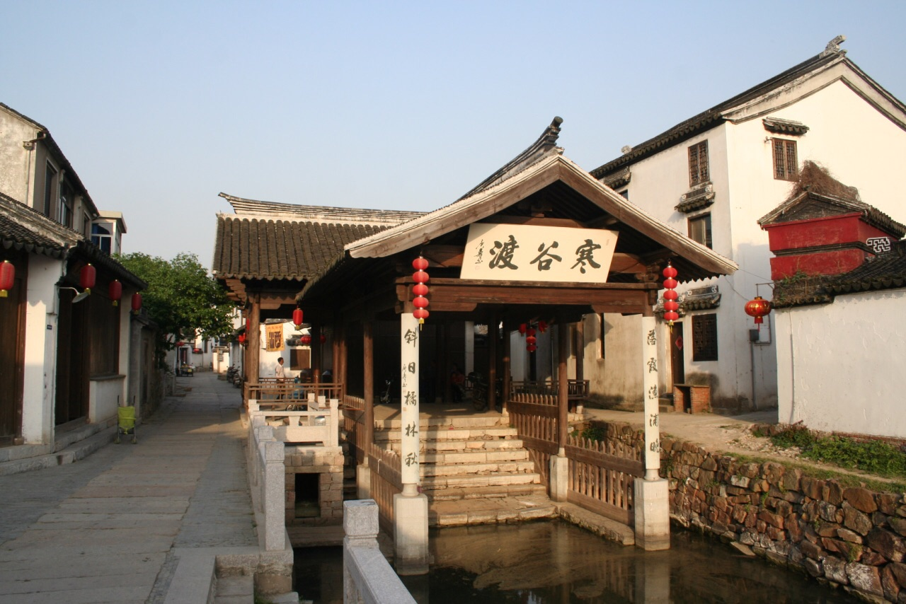
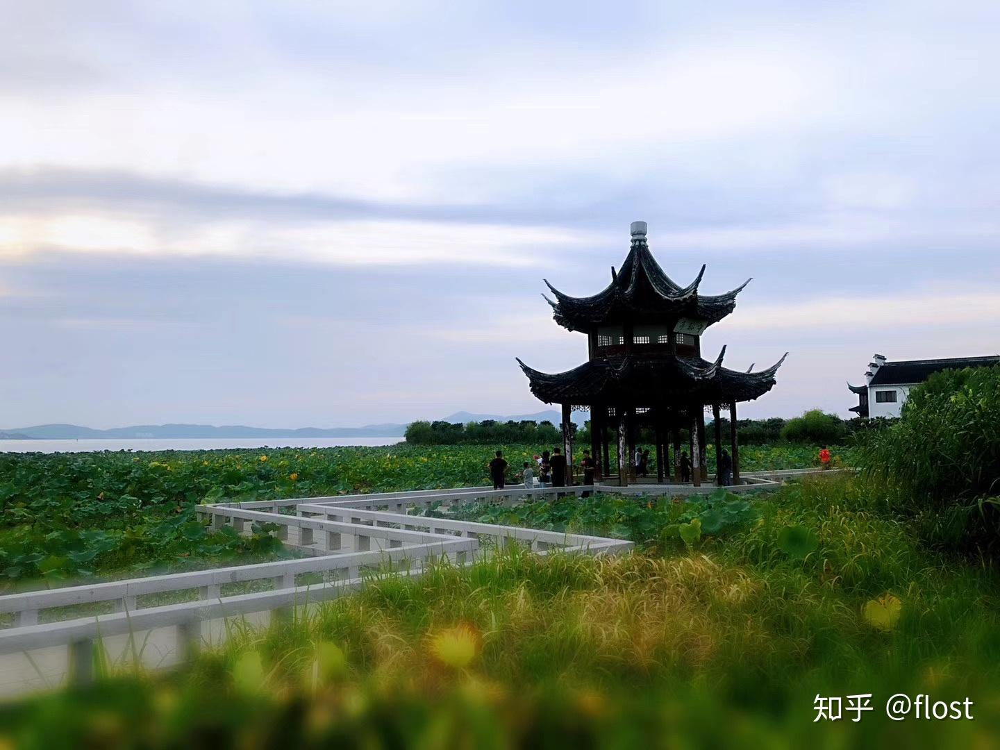
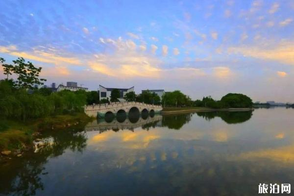
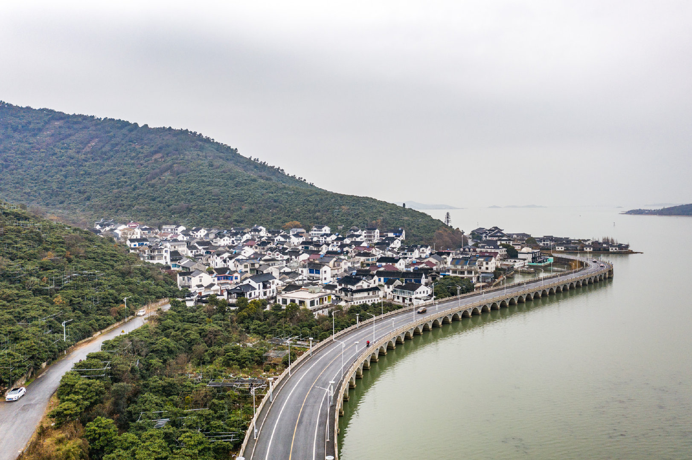
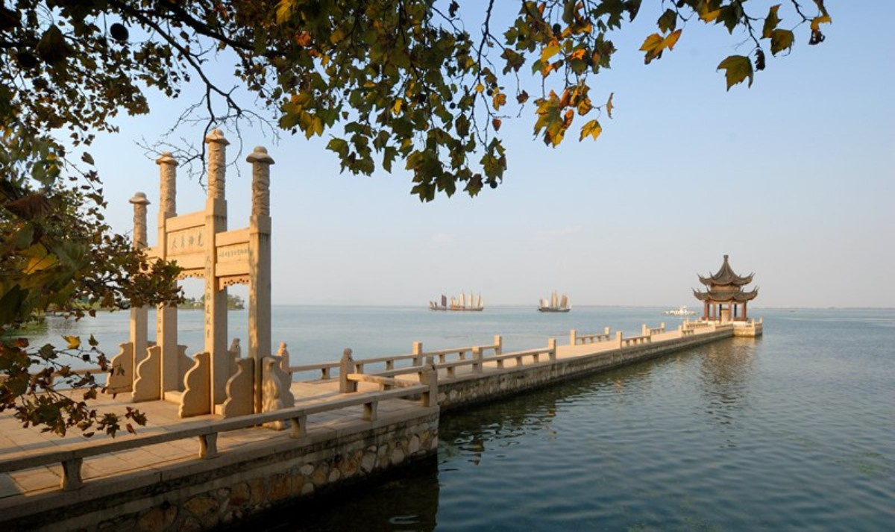
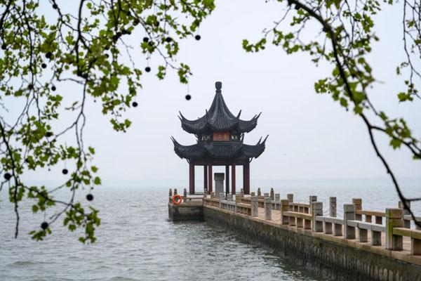

出发日期：2025年4月5日
出行人数：2人
天气状况：晴
温度：12°C ~ 22°C
风向：东南风
风力：3-4级
建议：春季天气温和，非常适合出游，建议携带薄外套，注意防晒。
路线：沿G60沪昆高速公路
预计车程：约2小时
距离：约180公里
建议游览顺序：陆巷古村 → 启园 → 雕花楼 → 莫厘峰 → 三山岛

陆巷古村是江南典型的水乡古村落，始建于宋代，历史悠久。村内保留着大量明清时期的古建筑，青石板路、小桥流水、粉墙黛瓦，展现了江南水乡的传统风貌。古村内还有众多的祠堂、古宅，是体验江南水乡文化的绝佳去处。
开放时间：08:00-16:30
门票：50元/人
地址：苏州市吴中区东山镇陆巷村

启园是一座典型的江南私家园林，园内假山叠石、亭台楼阁布局精巧。园中的水池、廊桥、花木相映成趣，体现了"咫尺之内、自成天地"的江南园林特色。园内四季花木繁茂，特别是春季时节，百花争艳，景色宜人。
开放时间：08:00-17:00
门票：40元/人
地址：苏州市吴中区东山镇

雕花楼又称"春在楼",是东山地区著名的明清建筑,以其精美的木雕艺术闻名。建于20世纪初,由富商所建。楼内的门窗、檐角、栏杆等处都采用高浮雕和透雕技艺,展现了江南地区传统木雕艺术的最高水平。现为重要文物保护单位。
开放时间：09:00-16:00
门票：45元/人
地址：苏州市吴中区东山镇堂里村

莫厘峰是东山的主峰，海拔293.5米，是太湖72峰之一。登顶可欣赏到太湖全景和周围的秀丽风光，山上植被茂密，空气清新。这里不仅是登山爱好者的必访之地，也是观赏日出、云海的绝佳位置。
开放时间：07:00-17:30
门票：30元/人
地址：苏州市吴中区东山镇莫厘峰景区

三山岛位于太湖中，是一个风景如画的小岛。岛上不仅有丰富的自然景观，还保留着众多历史遗迹和人文景观。岛上绿树成荫，空气清新，是休闲度假、亲近自然的理想去处。游客可以在此体验渔家生活，品尝太湖特色美食。
开放时间：08:30-16:30
门票：60元/人
地址：苏州市吴中区东山镇三山岛景区
推荐：陆巷人家
特色：地道江南本地菜
建议游览顺序：缥缈峰 → 明月湾 → 林屋洞 → 石公山 → 罗汉古刹 → 水月禅寺
缥缈峰是太湖西山的主峰，海拔336米。因常年云雾缭绕，宛如仙境，故得名"缥缈峰"。登顶可欣赏到壮丽的太湖全景。山上种满果树和茶树，春季可赏花，秋季可采果。山顶设有观景台，是观赏日出、云海的绝佳位置。
开放时间：08:00-16:30
门票：80元/人
地址：苏州市吴中区金庭镇西山风景区
明月湾以其古朴的江南水乡风情和历史遗迹吸引着众多游客。这里保留着500年历史的古建筑群，有精美的木雕石雕，以及1200年历史的古樟树。村名源于村边小溪的清澈月色倒影，传说西施曾在此赏月。村内有众多祠堂和博物馆展示祭祖文化，是体验江南水乡生活的绝佳去处。
开放时间：08:00-16:00
门票：50元/人
地址：苏州市吴中区金庭镇明月湾村

林屋洞被誉为"天下第九洞"，以其奇特的溶洞景观和丰富的钟乳石formations闻名。洞内冬暖夏凉，是避暑纳凉的好去处。洞内有"天然石画廊"、"地下长河"等景观，钟乳石形态各异，蔚为壮观。游客可乘船游览地下暗河，体验别样的溶洞风光。
开放时间：08:30-16:00
门票：60元/人
地址：苏州市吴中区西山镇林屋洞景区
石公山以其怪石嶙峋、三面环湖的独特地貌吸引着游客。山上有"一线天"等自然景观，是摄影爱好者的天堂。山顶可俯瞰太湖美景，山间古树参天，景色优美。春秋两季尤其适合登山游览，欣赏太湖日出和晚霞。
开放时间：07:30-16:30
门票：40元/人
地址：苏州市吴中区西山镇石公山景区

罗汉古刹是一座历史悠久的佛教寺庙，供奉着众多罗汉像。寺内环境幽静，是修身养性的理想场所。寺院建筑保持着传统的江南佛寺风格，庭院内古木参天，环境清幽。每逢初一十五，这里都会举行传统的佛事活动。
开放时间：08:00-16:30
门票：免费
地址：苏州市吴中区西山镇罗汉古刹
水月禅寺始建于南朝梁代(公元538年),是江南名刹。位于缥缈峰西北麓,因从峰顶望去常被云雾遮掩,如水中月般时隐时现而得名。是观音菩萨三十六相中"水月观音"造像发源地。寺内保存有明代《水月禅寺中兴记》等历史石碑,东首有著名的"无碍泉"。
开放时间：08:00-16:30
门票：免费
地址：苏州市吴中区金庭镇西部环岛旅游公路缥缈峰
路线：沿G60沪昆高速公路返回
预计到达时间：18:30左右